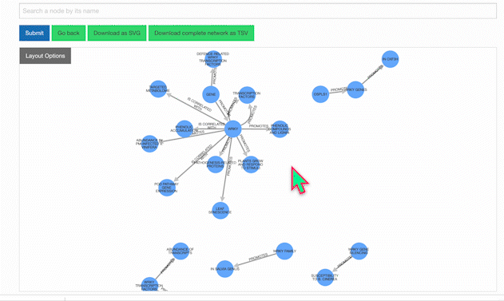
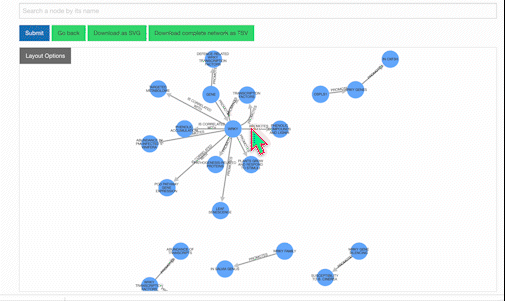
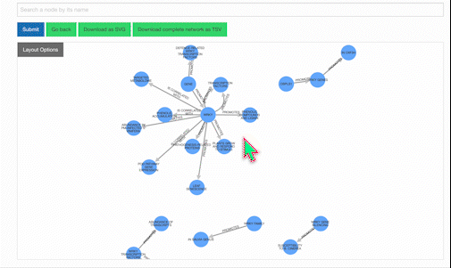

Help / FAQs
General Questions & Answers
-
How was the database constructed?
We used GPT to evaluate research abstracts and identify pairs of entities (e.g., genes, proteins, molecules, compartments, complexes) in addition to their unique interaction type (e.g., enhances, binds, affects, represses).
For instance, after examining the abstract"In plants, regulation of cellulose synthesis is fundamental for morphogenesis and plant growth. Cellulose is synthesized at the plasma membrane, and the orientation of synthesis is guided by cortical microtubules; however, the guiding mechanism is currently unknown. We show that the conditional root elongation pom2 mutants are impaired in cell elongation, fertility, and microtubule-related functions. Map-based cloning of the POM-POM2 locus revealed that it is allelic to CELLULOSE SYNTHASE INTERACTING1 (CSI1). Fluorescently tagged POM2/CSI1s associated with both plasma membrane-located cellulose synthases (CESAs) and post-Golgi CESA-containing compartments. Interestingly, while CESA insertions coincided with cortical microtubules in the pom2/csi1 mutants, the microtubule-defined movement of the CESAs was significantly reduced in the mutant. We propose that POM2/CSI1 provides a scaffold between the CESAs and cortical microtubules that guide cellulose synthesis."
GPT returned the following statements:- Cellulose: !synthesized at! Plasma Membrane
- Cortical Microtubules: !guide! Cellulose Synthesis
- POM2/CSI1: !associates with! CESAs
- POM2/CSI1: !provides scaffold between! CESAs and Cortical Microtubules
-
How can I search the database?
Because PlantConnectome is built from processed abstracts, gene identifiers such as AT4G32410 may not be interpretable by GPT. Instead, search with gene symbols (e.g., CESA1), as these are used in the literature.
You can also choose to search for terms mentioned in the abstracts (for instance, "proline", "cold", "root hair", etc.), author names, or PubMed IDs. -
Which papers were analyzed?
To ensure PlantConnectome reflects state-of-the-art knowledge, all research papers from which it derives were published after 2004. All articles from plant journals were downloaded, whereas non-plant-specific journals (e.g., PNAS, Cell, etc.) were harvested only for their publications examining plants.
 }})
-
How do I use the KnowledgeNetwork viewer?
Our KnowledgeNetwork viewer displays a plethora of relationships found between your search query and GPT-detected entities. Should you want to narrow your search options, click on the "Layout Options" button:

Then, select your edges of interest and click "Recalculate Layout":

To learn more about a specific node, click on it:

Users also have the option of personally modifying networks. For example, among the list of possible actions when clicking a node is removing it. Clicking once on the background will restore node opacity, while clicking twice will reincorporate the removed node.

To isolate a neighborhood of entities, select your node of interest and click "Isolate Neighborhood." Double-clicking on the background will restore the full, original network.  -
How can I access the research abstracts from which relationships were identified?
Below the KnowledgeNetwork viewer is a table showcasing the network's nodes and edges. Clicking on the Pubmed ID will display both the research abstract and entities identified from it:
 }})
-
How accurate is GPT in extracting information from the literature?
As with any AI model, GPT is not 100% accurate, generating results that may be erroneous or incomplete. Accordingly, relationships of interest warrant confirmation with the appropriate abstract. To estimate the accuracy rate, we sampled and manually inspected 50 articles, the results of which are summarized by the following 3 charts:

Distribution of correct, incorrect, and missing statements detected by GPT.

Total number of correct, incorrect, and missing statements extracted from the 50 articles.